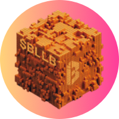
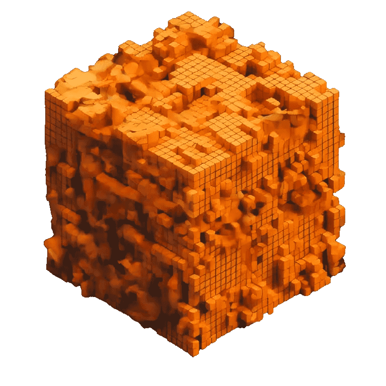

Claim $BLLB Airdrop
Click the Verify button to Verify your IDO allocation. After verification, you can Claim your airdrop or Stake your $BLLB tokens to earn more tokens.
??????
Rules: BakerySwap Launchpad is the exclusive IDO platform for $BLLB tokens. The allocated tokens you received are from the BakerySwap IDO allocation.
